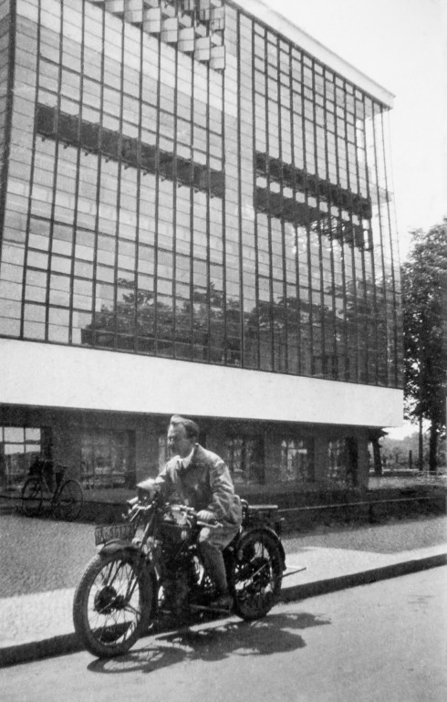

HEINRICH BROCKSIEPER
EIN HAGENER AM BAUHAUS
- DIE STOFFLICHKEIT DER DINGE
Maler Fotograf Experimentalfilmer
EIN HAGENER AM BAUHAUS
- DIE STOFFLICHKEIT DER DINGE
Unter den ersten Studierenden am Bauhaus in Weimar, vom Wintersemester 1919 bis 1922, war auch der in Hagen geborene Maler Heinrich Brocksieper (1898-1968) – angeregt u.a. durch die erste große Lyonel Feininger-Ausstellung im Hagener Museum Folkwang. Als Student bei Johannes Itten arbeitete Brocksieper außerdem in der Druckerei unter Feininger. Noch bis 1933 konnte er einen intensiven Kontakt zum Bauhaus aufrechterhalten und reiste wiederholt nach Weimar, Dessau und Berlin. Ab 1927 befasste Brocksieper sich verstärkt mit Fotografie und experimentellem Film. Durch einen Bombenangriff wurden sein Haus und Atelier 1944 mit dem darin gelagerten Großteil seines bisherigen Œuvres vernichtet. Ab 1945 nahm er die künstlerische Tätigkeit neu auf und unterhielt wieder schriftlichen Kontakt zu seinen Freunden aus der Zeit am Bauhaus. Alltagsgegenstände mit den Spuren des Gebrauchs, Porträts und Selbstbildnisse in ihrer Stofflichkeit waren sein zentrales Thema. Der 14 Jahre ältere Künstler Brocksieper war für Emil Schumacher (1912-1999) ein wichtiger Freund und nicht zuletzt Gesprächspartner in Zeiten der Isolation während des Dritten Reichs – der Kenntnisse und Fähigkeiten, die er insbesondere auch am Bauhaus erworben hatte, freigiebig mit ihm teilte. Die Ausstellung im Jahr des Bauhaus-Jubiläums gedenkt dieses talentierten Künstlers aus Hagen mit einer Retrospektive. Frühe Arbeiten aus der Zeit am Bauhaus, ebenso wie Experimentalfilme und Fotos können ebenso wie das Spätwerk des Künstlers neu entdeckt werden.

Heinrich Brocksieper
Ein Hagener am Bauhaus
- Die Stofflichkeit
der Dinge
24. März bis 23. Juni 2019